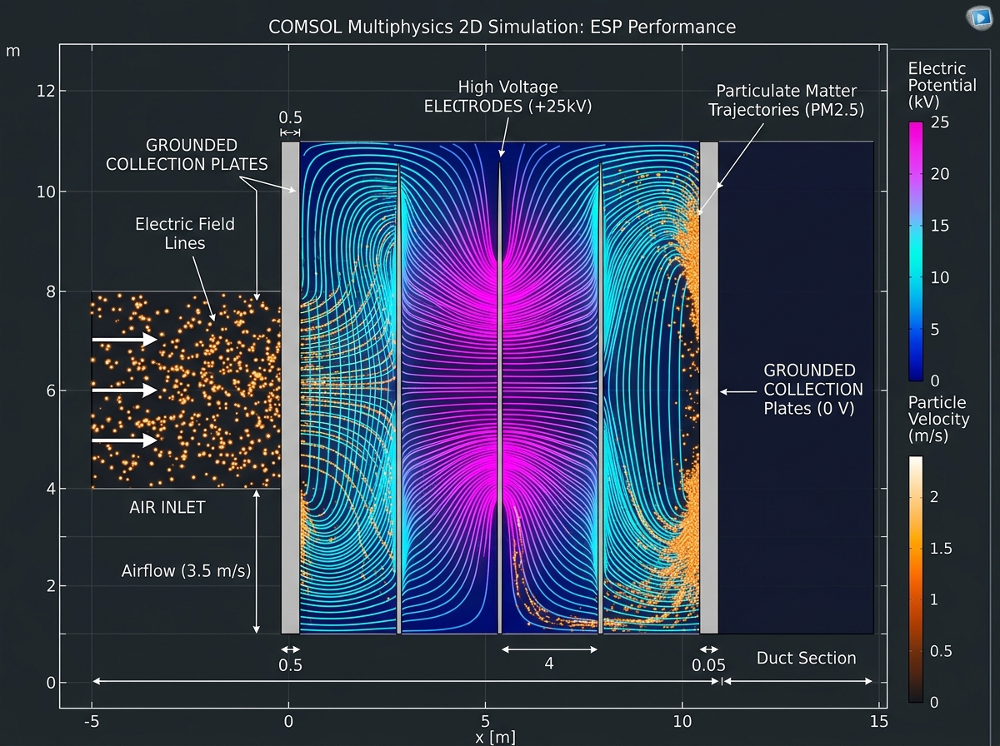

P01 · MULTIPHYSICS SIMULATION
Electrostatic Precipitator (ESP) Design & 2D Multiphysics Simulation
Physics Modeling — Designed and simulated a 2D electrostatic precipitator (ESP) integrating electrostatics and particle-tracing physics to analyze particulate-matter collection.
Simulation Execution — Performed geometry modeling, boundary-condition setup, meshing, and simulation to evaluate electric-field distribution and optimize collection efficiency.
Industrial Abatement — Analyzed corona discharge, charge accumulation on dust particles, and electrostatic precipitation forces for high-voltage industrial exhaust air filtration.
Research origin — Research Internship @ Indian Institute of Technology (IIT) Bhubaneswar, Odisha.